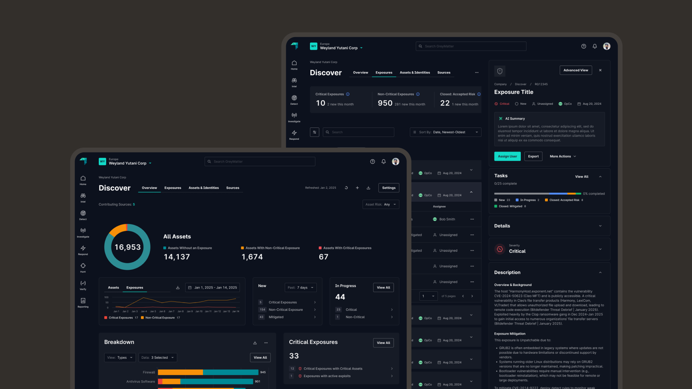
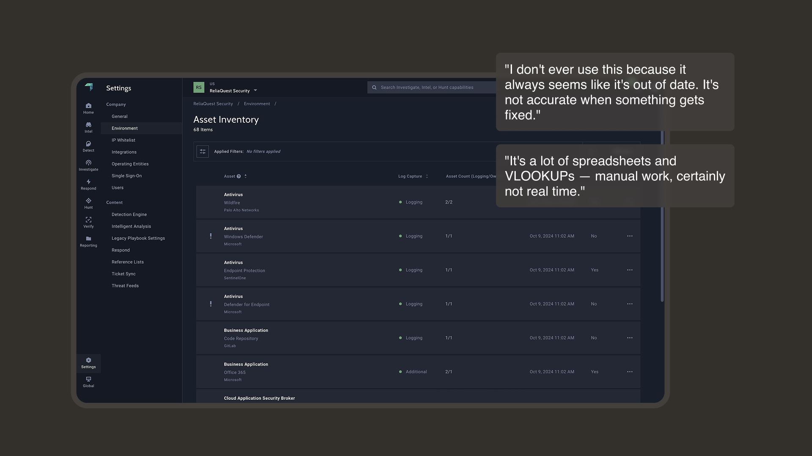

ReliaQuest
Discover
Designed a 0 → 1 Exposure and Inventory solution, bringing in $1.5M in revenue

Nearly 7 in 10 breaches start with an asset no one knew existed. GreyMatter identifies those breaches quickly, but it didn’t do anything to prevent them. Discover gave GreyMatter customers visibility into their attack surface for the first time to help close that gap.
$3.31M
Current ARR
41
Customers
190%
Release ARR Goal
The Problem
We connected to everything but couldn’t tell the user what was connected
Before Discover, GreyMatter’s asset inventory was a static table that customers populated themselves. Instead of us acting as their security expert, it required our customers to be experts. It was slow, delayed onboarding, and often outdated.
